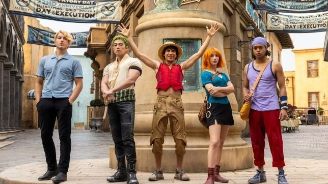

Noticia de One Piece
Netflix prepara la segunda temporada del live-action con nuevos arcos y personajes
Netflix confirma que la serie entrará en los arcos de Loguetown, Reverse Mountain, Whiskey Peak y Drum Island.

Netflix ha anunciado que la temporada 2 de su adaptación live-action de One Piece llegará en 2026 y ampliará su elenco con personajes tan esperados como Tony Tony Chopper y Dr. Kureha. La producción ya ha confirmado que también habrá temporada 3. En el anuncio se afirma que la nueva etapa explorará los primeros grandes arcos de la aventura pirata, y que el rodaje comenzó en Ciudad del Cabo, Sudáfrica. El teaser presentado durante el evento One Piece Day mostró una ambientación más amplia, una escala más épica y escenarios que prometen acercarse más al espíritu del manga original.
Visita la Noticia original >> << Vuelve a la página de noticias